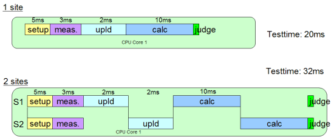

SmartCalc use models
In typical multisite test programs, the calculations of the captured data are done serially on just one CPU core after the upload, as the following figure illustrates.
Note All test times shown are examples.

Since the calculation time doubles, the multisite efficiency (MSE) is just around 40%.
This section shows use models of SmartCalc and illustrates how the use of multithreading and multiple cores may improve throughput.
Functional changes
- Introduced in SmarTest 6.5.3